Cooling Module Pump Diaphragm and Valves Removal and Replacement
Parts and Materials Required
- T10 TORX screwdriver
- 2.5 mm Allen Wrench
- Absorbent Bench Pads
- Felt Tip Marker
- Cooling Pump Pressure Gauge [TLS-06424]
 Rebuild Kit, Cooling Recirculation Pump, Diaphragm & Valves
Rebuild Kit, Cooling Recirculation Pump, Diaphragm & Valves
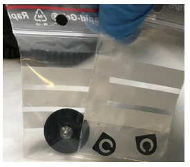
Time Required
- 30 minutes for Valve and Diaphragm replacement
- 30 minutes for Pressure Test
Procedure
- Wear proper PPE.
- Lay out clean absorbent bench pads on a benchtop.
- Shutdown the Panther System.
- Remove the Cooling Recirculation Pump for the Cooling Module.

Note— The Cooling Recirculation Pump has 2 tubes and 1 cable connection that need to be disconnected before removing the pump from the Panther System. - For a Single Fan Cooling Module, use a 2.5 mm Allen wrench to remove the 2 screws holding the Cooling Recirculation Pump in place.
- For a Dual Fan Cooling Module, with your gloved hands, pull the cooling pump free of the securing foam block.
- If needed, refer to:
- For Dual Fan: Cooling Module Coolant Pump Removal and Replacement (Dual Fan)
- For Single Fan: Cooling Module Pump Removal and Replacement (Single Fan)
- Label the Cooling Module input and output tubes for reference when reconnecting the tubes.
Note— Use the stamped triangles (shown in white in the image below). - Disconnect the Luer locks from the Cooling Recirculation Pump over an absorbent bench pad as fluids may drip out of the tubing.
- Disconnect the Cooling Recirculation Pump power cable from the PCB.
Note— For the Dual Fan Cooling Module, the cable (see photo below) is wedged in a channel in the foam block and must be pulled free to remove the Cooling Pump.
- Place the pump on a benchtop.
- Draw a straight line on the back of the pump head with a felt tip marker. This will be used as a guide for reassembly.
- Remove the pump head from the cooling pump housing by removing the 4 screws and, if present, 4 washers. Save these parts for reassembly.
Note—These screws may be Phillips or Torx screws. 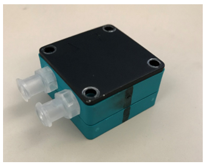
- Disassemble the 3 layers of the pump head and place them on a clean absorbent bench pad.
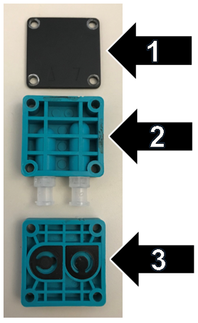
- Remove and discard the 2 small gaskets (flapper valves) from layer 3.
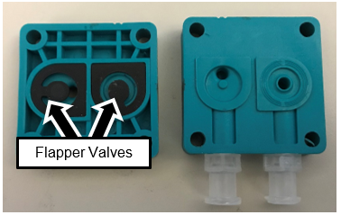
- Install the new gaskets from the Replacement Valve Kit.
- Unscrew the diaphragm from the main body of the Cooling Pump.
Note—The center screwshaft of the diaphragm has 3 small metal washers. Save these for reinstallation of the diaphragm. - Grip the diaphragm (wet membrane in image below) using your fingertips to curl the edges of the diaphragm.
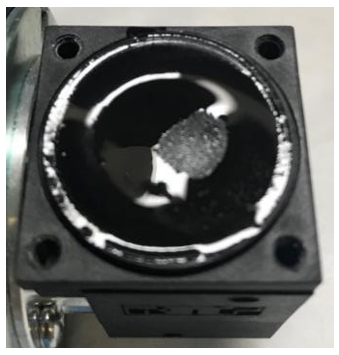
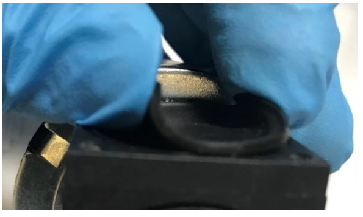
- Turn the diaphragm counter-clockwise to loosen it.
- When the diaphragm is loose, turn the cooling pump upside-down and completely unscrew the diaphragm.
- Remove the three washers from the center screwshaft of the old diaphragm.
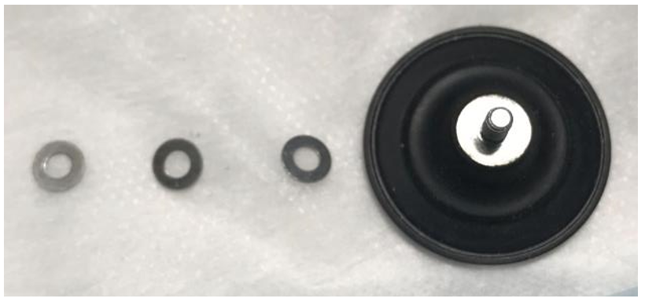
- Place the three washers onto the center screwshaft of the new diaphragm.
- With the cooling pump upside-down, partially screw in the new diaphragm (clockwise).
Note— When the cooling pump is upside-down, gravity helps to align the target to the screw in the diaphragm.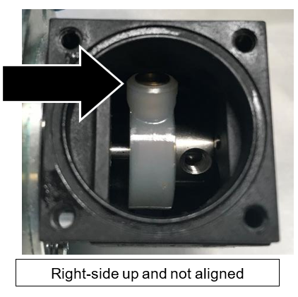
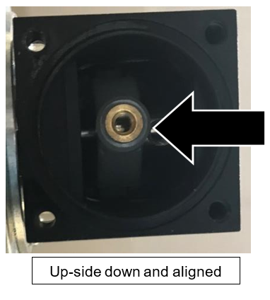
- Turn the cooling pump right-side up.
- Tighten the new diaphragm clockwise by hand as firmly as possible.
Note—You will not damage the diaphragm by tightening it. - Push the edge of the diaphragm down firmly into place.
- Reassemble the pump head by aligning the black line from Step 9.
Note— Proper alignment of the pump head components is required for the pump to function correctly. See the image below. - Reassemble the 3 layers of the pump head and reattach it to the pump housing with the 4 screws (and washers, if used) from Step 6.
- Reattach the Cooling Recirculation Pump to the Cooling Module.
- Reconnect the Cooling Recirculation Pump PCB cable to the PCB.


Verification
- Verify that the Cooling Module has adequate fluid. Fill if necessary. If needed, refer to Filling the Cooling Module.
- Connect the Cooling Pump Pressure Gauge to the Pump Outlet and the Reagent Bay tube.
- In Service Software, turn on the Cooling Pump as follows:
Note—Screenshots are taken from Service Software v4.0.7.0. Your screen may vary. - Click 4. LiVaCo System and Drawer.
- From the drop-down, select Liquid, Vacuum, Cooling System.
- Click Initialize.
- Under Circulating Pump, Click On.
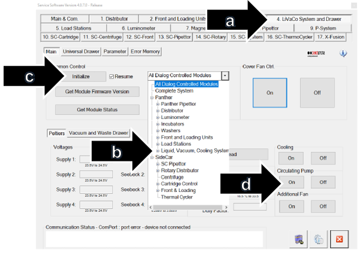
- Verify that the pressure is between 2.5psi and 6psi.
- If pressure is less than 2.5psi, the pump is not operating correctly or there is a leak in the system. Troubleshoot and establish pressure between 2.5psi and 6psi.
- If pressure is between 2.5psi and 6psi, shutdown the system and PC.
- Remove the Cooling Pump Pressure Gauge.
- Reconnect the Cooling Recirculation Pump to the Panther System.
- Power on the system and PC.
- Using Service Software, turn on the Cooling Pump (see Step 3 above).
- Click on the 4.LiVaCo System and Drawer tab in Service Software and check the Cooling System temperature as follows:
- Under Cooling, click On.
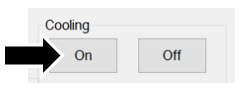
- Click Read.
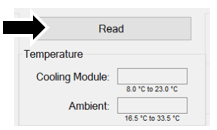
- Check that the Cooling Module temperature reads between 8°C – 23.0°C. Refer to Panther System Thermal Sensor Ranges for Aptima Assays.
- Using Service Software under the 2. Front and Loading Units tab, select Bay Sensors ans Tip Drawer tab.
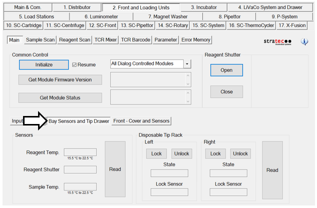
- Under Sensors, click Read.
Note—This will take 10 minutes to come to temperature. - Check that Reagent and Sample temperatures meet specification.
- Check for leaks at the Luer locks.
- If temperatures pass specifications and no leaks are found, the verification is complete.


 button at the top of the page to send feedback, comments, or change requests.
button at the top of the page to send feedback, comments, or change requests.